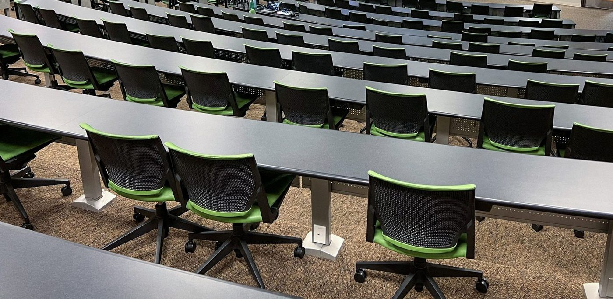

Her gün 08:00–22:00 açık
Dersler
Dersler ve çalışma biçimi
Hangi derslerin, hangi sınıf düzeylerinde ve hangi biçimde verildiğini dönem programı belirler; güncel bilgiyi akademiden alın. Bu sayfada öğrencilerin sık zorlandığı konuları, çalışma biçimlerinin farkını ve evde işe yarayan teknikleri bulacaksınız.
Ders defteri
Sekmeye dokunun: her alanda sık zorlanılan konular, evde kısa tekrar önerileri ve bilgi alırken söylemeniz işe yarayacak noktalar. Liste geneldir; akademideki ders programını göstermez.
Matematik
Sık zorlanılan konular
- Kesirler, ondalık gösterim ve sayılarla işlemler
- Oran-orantı, yüzde hesapları
- Denklemler ve eşitsizlikler
- Problemler: yaş, işçi, hareket, karışım
- Üslü ve köklü ifadeler
- Fonksiyonlar ve grafik okuma
- Geometri: açı, üçgen, alan ve hacim
Evde kısa tekrar
- Her gün az ama düzenli soru çözün; uzun aralar konuyu soğutur.
- Formülü ezberlemeden önce nereden geldiğini bir kez kendiniz çıkarın.
- Yanlış soruyu çözümüyle soru defterine yazın, haftada bir yeniden çözün.
- Çözümü sesli anlatmak, işlem hatalarını yakalamayı kolaylaştırır.
Bilgi alırken söyleyin
Sınıf düzeyini, okulda işlenen son konuyu ve varsa son yazılı ya da deneme sonucunu belirtin.
Bu alan için talep oluşturTürkçe ve Edebiyat
Sık zorlanılan konular
- Paragraf: ana düşünce, yardımcı düşünce, başlık bulma
- Sözcükte ve cümlede anlam
- Yazım kuralları ve noktalama
- Dil bilgisi: fiilimsiler, cümlenin ögeleri, cümle türleri
- Sözel mantık ve görsel okuma soruları
- Edebiyat: şiir bilgisi, edebî akımlar, yazar-eser
Evde kısa tekrar
- Her gün kısa bir metin okuyun ve tek cümleyle özetleyin.
- Bilmediğiniz kelimeleri cümlesiyle birlikte bir deftere yazın.
- Paragraf sorularında önce soruyu, sonra metni okuyun.
- Yazım kurallarını örnek cümlelerle, kısa tekrarlarla pekiştirin.
Bilgi alırken söyleyin
Okuma hızında mı, anlamada mı, dil bilgisinde mi zorlanıldığını yazarsanız görüşme daha verimli olur.
Bu alan için talep oluşturFen Bilimleri, Fizik, Kimya, Biyoloji
Sık zorlanılan konular
- Kuvvet, hareket ve basınç
- Madde ve değişim, karışımlar
- Elektrik ve enerji dönüşümleri
- Hücre, kalıtım ve DNA
- Asitler, bazlar ve tepkimeler
- Grafik ve deney yorumlama soruları
Evde kısa tekrar
- Konuyu kavram haritasıyla tek sayfada özetleyin.
- Deney ya da animasyon izledikten sonra olanı kendi cümlelerinizle anlatın.
- Birimleri ve formüllerdeki harflerin anlamını bir köşeye yazın.
- Grafik sorularında önce eksenleri ve birimleri okuyun.
Bilgi alırken söyleyin
Ortaokul fen bilimleri mi, lisede fizik, kimya ya da biyoloji mi; hangi ders olduğunu ayrı ayrı belirtin.
Bu alan için talep oluşturSosyal Bilgiler, İnkılap Tarihi, Tarih, Coğrafya
Sık zorlanılan konular
- Kronoloji: olayları doğru sıraya koymak
- Neden-sonuç ilişkileri
- T.C. İnkılap Tarihi ve Atatürkçülük
- Harita okuma, iklim ve nüfus konuları
- Kavram ve tanım soruları
Evde kısa tekrar
- Bir zaman şeridi çizin, her konuda üzerine yeni olay ekleyin.
- Haritayı boş bir kâğıda kendiniz çizmeyi deneyin.
- Her olay için “neden oldu, sonucu ne oldu” iki satır not alın.
- Kısa soru-cevap kartlarıyla kendinizi yoklayın.
Bilgi alırken söyleyin
Hangi sınıf ve hangi ders olduğunu yazın; sosyal alan dersleri sınıf düzeyine göre adlarını değiştirir.
Bu alan için talep oluşturİngilizce
Sık zorlanılan konular
- Kelime bilgisi ve kalıp ifadeler
- Okuma-anlama
- Dinleme ve telaffuz
- Zamanlar ve temel dil bilgisi
- Kısa yazma ve konuşma
Evde kısa tekrar
- Kelimeleri tek başına değil, cümle içinde öğrenin.
- Her gün birkaç dakika sesli okuma yapın.
- Bildiğiniz bir diziyi ya da videoyu İngilizce altyazıyla izleyin.
- Günlüğünüze İngilizce üç cümle yazın.
Bilgi alırken söyleyin
Okul dersi mi, sınav hazırlığı mı, konuşma pratiği mi; beklentinizi belirtin.
Bu alan için talep oluşturGrup mu, bireysel mi, etüt mü?
Eğitim kurumlarında sık görülen dört çalışma biçiminin genel farkları. Yasin Hoca Akademi'de hangilerinin olduğunu ve nasıl işlediğini sorarak öğrenin.
Grup dersi
Aynı düzeydeki öğrencilerle birlikte işlenen ders. Başkalarının sorularından da öğrenilir, belirli bir tempo vardır.
Kime uygun olabilir: Düzenli bir ritme ve arkadaş ortamına ihtiyaç duyan, sınıfta soru sormaktan çekinmeyen öğrenci.
Bireysel ders
Bir öğretmen, bir öğrenci. Tempo ve konu sırası öğrenciye göre ayarlanır.
Kime uygun olabilir: Belirli eksikleri hızla kapatmak isteyen ya da grupta soru sormaktan çekinen öğrenci.
Etüt
Öğrenci ödevini ve tekrarlarını sessiz bir ortamda yapar, takıldığında sorar.
Kime uygun olabilir: Evde odaklanmakta zorlanan, çalışma düzeni kurmaya çalışan öğrenci.
Deneme ve takip
Belirli aralıklarla sınav provası ve sonuçların konu konu incelenmesi.
Kime uygun olabilir: LGS ya da YKS gibi merkezi sınavlara hazırlanan, ilerlemesini görmek isteyen öğrenci.

Çalışma teknikleri defteri
Ders ya da düzey fark etmeksizin işe yarayan, araştırmalarda sık anılan yöntemler. İkisinin aracı bu sayfada çalışıyor: sayacı başlatın, tekrar planınızı çıkarın.
Pomodoro: odak ve mola
Tek bir işe 25 dakika odaklanın, ardından 5 dakika mola verin. Dört turdan sonra 15–30 dakikalık uzun bir mola verin. Başlamak kolaylaşır, yorgunluk bölünür, telefon “sonra” beklemeyi öğrenir. Uzun konsantrasyona alışkın öğrenciler 50/10 düzenini deneyebilir.
Aralıklı tekrar planlayıcı
Öğrendikten kısa süre sonra, sonra giderek uzayan aralıklarla tekrar etmek unutmayı yavaşlatır. Yaygın bir örnek düzen: ertesi gün, 3 gün sonra, 1 hafta sonra, 2 hafta sonra ve 1 ay sonra. Konuyu ve ilk çalışma gününü yazın, tekrar günleriniz çıksın.
Soru defteri nasıl tutulur?
- Defteri derslere ayırın ya da renkli sekmelerle bölün.
- Yanlış yaptığınız ya da boş bıraktığınız soruyu yazın veya kesip yapıştırın; kaynağını not edin.
- Altına doğru çözümü kendi cümlelerinizle yazın.
- “Neden yanlış yaptım?” kutusuna tek kelime: bilgi, dikkat ya da süre.
- Sorunun köşesine konu adını etiket olarak yazın.
- Haftada bir defteri baştan çözün; iki kez doğru çözdüğünüz soruyu işaretleyip geçin.
Aktif hatırlama ve anlatarak öğrenme
Bir konuyu okuduktan sonra kitabı kapatın ve hatırladığınız her şeyi boş bir kâğıda yazın. Sonra kitaba dönüp eksiklerinizi farklı renkle tamamlayın. Yeniden okumak tanıdık gelir; hatırlamaya çalışmak ise öğrenir.
Bir adım ötesi: konuyu küçük bir kardeşe anlatıyormuş gibi sade cümlelerle anlatın. Takıldığınız, “şey” dediğiniz yer, eksik olan yerdir.
Haftalık plan kurmak
- Okulun ders programını ve sabit işleri (servis, kurs, spor) haftalık bir tabloya yazın.
- Kalan boşluklara her gün bir ya da iki kısa tekrar bloğu yerleştirin.
- Zor dersi enerjinizin yüksek olduğu saate koyun.
- Haftada bir genel tekrar ve bir dinlenme zamanı ayırın.
- Hafta sonunda planı gözden geçirin; tutmayan saati suçlamadan değiştirin.
Hangi ders, hangi gün?
Ders listesini burada vermiyoruz; çünkü program döneme ve gruplara göre değişebilir. Sınıf düzeyini ve dersleri seçin, size uyan seçenekler için bilgi alın.